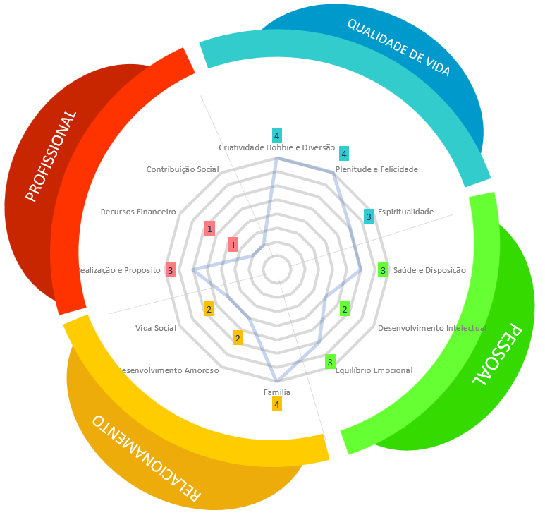

Portfólio Pessoal
Carreira e profissão
A profissão que eu desejo estudar é a de desenvolvedor de software, na área de programação, de tecnologia, sistemas de informação e afins. A carreira que eu desejo seguir é uma carreira de desenvolvedor front-end ou back-end em empresas de médio porte do exterior, focando em atender soluções para clientes que desejam transformar e evoluir o seu negócio.
Marketing Pessoal
O Marketing Pessoal é conjunto de técnicas e estratégias que uma pessoa faz para valorizar o seu trabalho, ou seja, são formas dela divulgar e valorizar as coisas que ela faz e chamar atenção para as atividades que ela executa. A ideia principal é ganhar destaque e ser notado como uma pessoa com mais visibilidade, sempre buscando ter relevância e criar uma imagem de respeito.
Como o Marketing Pessoal atua em cima do seu trabalho, isso vai ajudar a te destacar das outras pessoas, por exemplo, um escritório de advocacia precisa de um site para atrair e captar clientes. Se eu posto no meu LinkedIn sobre os projetos que eu faço, sempre que alguém interagir, ela leva esse conteúdo para a rede dela, e assim atingindo mais pessoas. Se esse advogado vier me procurar, ele vai ter bastante conteúdo para olhar sobre meu trabalho, o que vai gerar confiança na hora de contratar o meu trabalho para sanar a necessidade dele.
O texto expõe a opinião de uma pessoa que seguiu estratégias para o Marketing Pessoal de uma forma rigorosa sem entender seus reais benefícios. Ele não busca entender o que isso pode trazer para ele, ou como pode ajudar ele a melhorar de forma positiva, e acaba criando uma visão negativa de primeira impressão sobre o Marketing Pessoal.
Eu acredito que o Marketing Pessoal é uma ferramenta muito valiosa e que deve ser trabalha da maneira correta, mas que você sempre deve buscar entregar valor para atrair seus clientes e públicos que estejam relacionados a sua área.
Roda da vida
- Pessoal:
- Saúde e disposição - 3 / 10
- Desenvolvimento intelectual - 2 / 10
- Equilíbrio emocional - 3 / 10
- Profissional:
- Realização e propósito - 3 / 10
- Recursos financeiros - 1 / 10
- Contribuição social - 1 / 10
- Relacionamentos:
- Família - 4 / 10
- Desenvolvimento amoroso - 2 / 10
- Vida social - 2 / 10
- Qualidade de vida:
- Criatividade, hobbies e diversão - 4 / 10
- Plenitude e felicidade - 4 / 10
- Espiritualidade - 3 / 10
Círculo Dourado
Por quê? - (Why?)
Eu escolhi trabalhar com programação e tecnologia porque é uma área que eu me identifico desde pequeno. Sempre tive curiosidade em aprender sobre como as coisas funcionavam no computador e isso sempre me motivou a buscar entender e aprender mais. Além de ter a possibilidade de trabalhar sempre da minha casa.
Como? - (How?)
Através da minha curiosidade, eu tenho buscado aprender cada vez mais, e isso me levou a cursos e aulas ensinando a como criar e desenvolver sites e programas, que é algo que eu gosto de fazer.
O quê? - (What?)
Vou vender o meu conhecimento técnico em relação ao desenvolvimento utilizando as tecnologias que fazem sentido para atingir o objetivo do cliente e satisfazer suas necessidades.
Mapa de empatia
Mapa de empatia
Declaração de visão

Em 1 eu finalizo minha graduação, e estarei disponível para me candidatar as vagas do mercado de tecnologia. Também vou aproveitar meus conhecimentos que adquiri durante o estágio que fiz enquanto cursava a faculdade. Em 10 anos quero estar morando no exterior, preferencialmente no Canadá. Trabalhando de casa na modalidade Home Office, atuando como especialista em desenvolvimento de softwares.